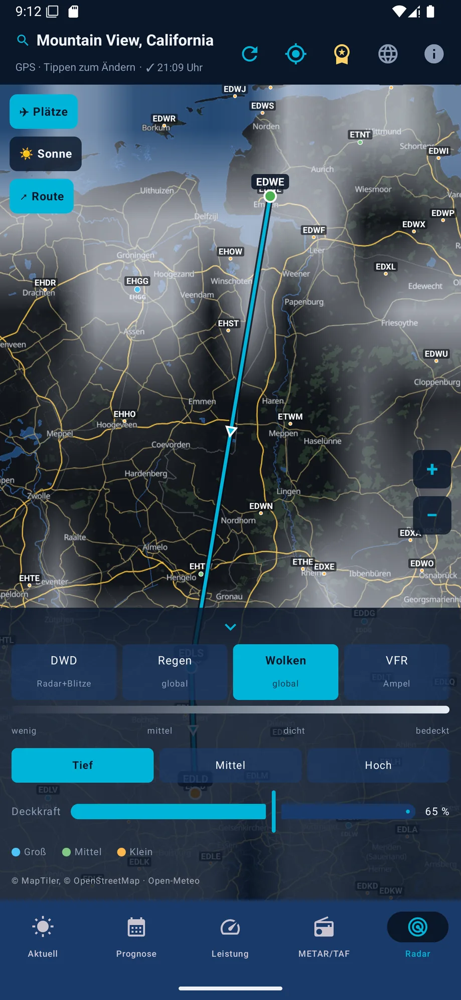
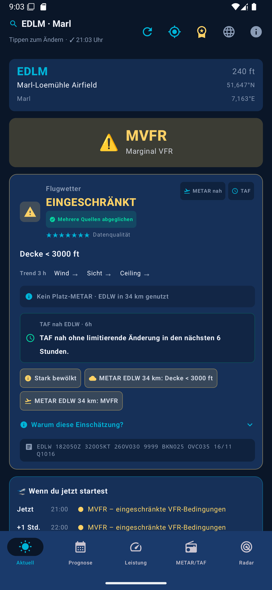
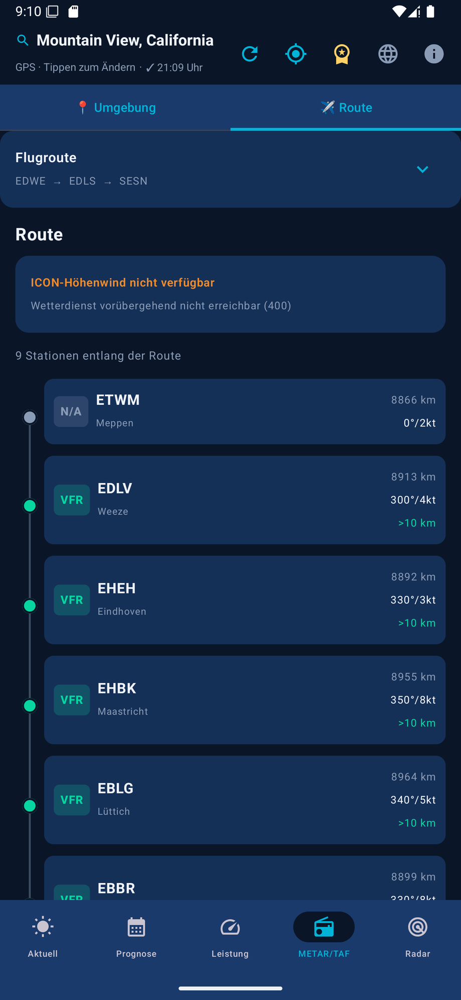
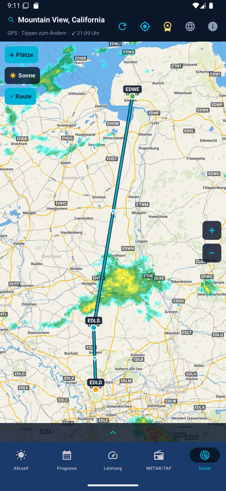
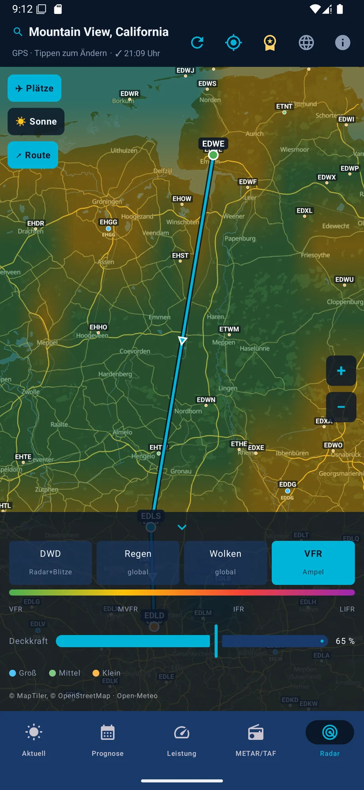
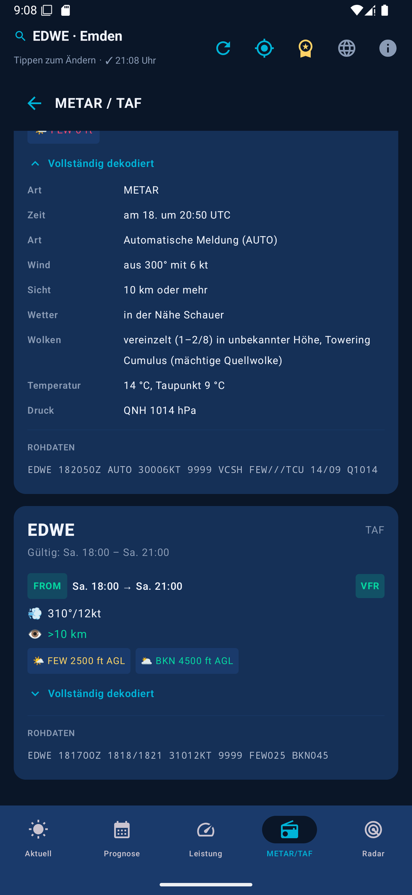
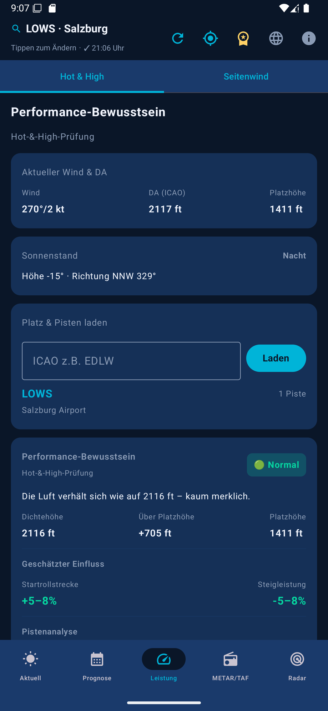
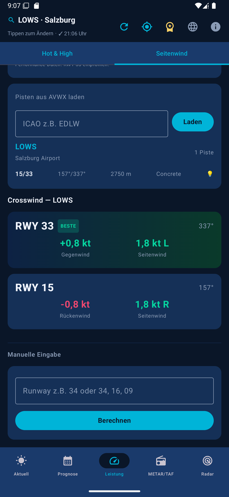

VFR Wetter bundles current weather data, METAR/TAF, DWD radar, MOSMIX, route assessment, density altitude, crosswind and sun position into a clear, traceable assessment for your private VFR flight preparation.


Not just raw data, but a traceable assessment with reasons, data quality and trends – from the overview to runway choice.
Flyable, marginal or no-go – with prioritized reasons, a data-quality score and an expandable "Why this assessment?" explanation.
Current weather by GPS or search by ICAO, name or city across ~19,000 airports – fully searchable offline.
Visibility, cloud cover, wind, gusts and weather code combine into the VFR/MVFR/IFR/LIFR flight category at a glance.
Shows what's changed since the last refresh – category, ceiling, visibility, wind, gusts, new DWD warnings – with an overall better/worse verdict.
A traffic-light short-term outlook at your location for now, +1, +2 and +3 hours, including the main reason for each hour.
Saved airports with a live flight category right in the search dialog, plus a conservative flight-window hint from the standard and regional model. Optional, off-by-default change notifications per favorite – explicitly not a go-ahead to fly.
Every group – wind incl. gusts, visibility, RVR, weather, clouds, QNH, trend – in plain, understandable language.
Stations along the route as a vertical traffic-light timeline, plus a time-aware hazard corridor: upper winds and model signals at up to eight ETA points, official MeteoAlarm warning polygons matched exactly to passage time, valid TAF change groups, and DWD RADVOR precipitation at the route point – with a freely selectable departure time up to 72 hours ahead and freely selectable cruise speed in kt. The map draws each leg green/yellow/red.
ICON-D2 forecast across central Europe, ICON-EU elsewhere, with fixed upper-wind bands (2,000/5,000/8,000 ft MSL) plus haze/Saharan dust and coastal-swell hints.
For VFR airfields without their own METAR, a nearby station is found automatically and clearly labeled as a supplementary source.
If AVWX has no data, AviationWeather.gov steps in as a worldwide METAR/TAF fallback.
Besides Germany (DWD), current official ground observations from Austria (GeoSphere TAWES), Switzerland (MeteoSwiss SwissMetNet), Slovenia (ARSO), Denmark (DMI), Croatia (DHMZ), Belgium (KMI/IRM), the Netherlands (KNMI), France (Météo-France), Spain (AEMET), Sweden (SMHI), Finland (FMI) and Norway (MET Norway Frost) refine the model values – only applied within 25 km distance, 500 m elevation difference and, depending on reporting cadence, at most 40 to 100 minutes of age.
In the Netherlands/Belgium (KNMI HARMONIE), Denmark/Croatia/Poland (DMI HARMONIE), France/Corsica/northern and central Spain incl. the Balearics (Météo-France AROME), Austria (GeoSphere AROME), Switzerland (MeteoSwiss ICON-CH1/CH2) and Italy incl. Sardinia and Sicily (ItaliaMeteo ICON-2I), a finer regional model replaces the coarse hourly values for today. If it deviates meaningfully from the standard forecast (visibility, gusts, low cloud, precipitation, thunderstorms), an otherwise green assessment is downgraded to "Marginal".
DWD warnings for Germany, supplemented by MeteoAlarm as a free fallback for many more European countries – a warning only counts if the location truly lies within the warning area and the validity period is active.
Density altitude, pressure altitude, ISA deviation and humidity for realistic takeoff and climb performance.
Cloud base, freezing level plus thermal, turbulence and windshear hints – factored in only where they genuinely limit the flight.
The most favorable runway heading by headwind, plus crosswind and tailwind assessment right in the main recommendation.
Elevation, azimuth/compass and phase (day/golden hour/twilight) in the overview – plus a glare warning per runway heading in the performance tab.
DWD radar + lightning, EUMETSAT GeoColour satellite imagery, Europe-wide EUMETNET OPERA radar observations (each with 2 hours of history), a self-rendered Open-Meteo cloud field (low/mid/high) and a VFR traffic-light heatmap – with opacity control, legend and a shared time slider up to +2 hours (the official DWD nowcast, or hourly model forecasts for clouds and the VFR layer, clearly labeled). Compact layer controls, all 5 layers in one row.
~19,000 worldwide ICAO airports as points by type with labels, tappable to select, toggle on/off.
A go/no-go assessment for the day plus an hourly trend from Open-Meteo data.
Refreshes the selected airport or GPS location at the tap of a button – without a new search.
The most recently loaded data stays available locally; the app visibly warns when data is older than 60 minutes.
A responsive widget with compact, standard and expanded layouts for a quick overview right on the homescreen, with manual refresh.
System language, German or English via a top-bar icon – currently available for the splash screen and main chrome, with more screens following step by step.
Key-protected weather requests run through a dedicated cloud service secured against abuse with Firebase App Check.
A clear notice at every app launch: the app is a tool, not a replacement for official flight weather briefing.
The app doesn't just show a traffic-light symbol – it explains what it's based on.
Visibility, wind, gusts, precipitation, thunderstorm/thermal risk, DWD warnings and cloud conditions are assessed, among other factors. If an ICAO airport is selected, its METAR is factored in first: IFR/LIFR forces "No-go", MVFR downgrades to at least "Marginal".
TAF is checked for the next 6 hours, with DWD MOSMIX as an additional hard forecast source. DWD radar supplies the current precipitation rate at the location – "Marginal" from 2.5 mm/h, "No-go" from 7.5 mm/h.
Runways are loaded for the selected airport and the most favorable heading is assessed by headwind: crosswind > 15 kt or tailwind > 3 kt leads to at least "Marginal", from 20 kt or 7 kt to "No-go".
Instead of treating a "missing METAR" as an error, the app is upfront about what the assessment is based on: multiple sources cross-checked, nearby supplementary data, or OWM + Open-Meteo if no station is available within 25 km.
VFR Wetter is a subscription app. All core features can be tried free of charge first.
After the disclaimer, the free trial starts automatically – with no feature restrictions.
Afterwards, VFR Wetter Pro continues as a subscription via Google Play Billing unless you cancel beforehand. You'll see the current price in the Google Play Store.
Cancel anytime directly in the Google Play Store. Payment processing runs entirely through Google Play – the app provider never sees your payment data.
A quick look at the app: assessment, route, radar, METAR decoder, performance and crosswind.






VFR Wetter combines established weather, aviation and map services into one shared assessment.
Key-protected requests to OpenWeatherMap, AVWX and Open-Meteo run through a dedicated cloud service secured with Firebase App Check – API keys never leave the app.
No. The app is a supplementary tool for private flight preparation. It does not replace an official flight weather briefing, NOTAM/AIP checks, POH performance calculations, or the decision of the pilot in command.
The most recently loaded weather data is cached locally and stays visible offline. If the data is older than 60 minutes, the app clearly flags it. Airport search across ~19,000 airports works fully offline.
The app automatically looks for a nearby METAR station. Within 10 km it's included as a nearby supplementary source; between 10 and 25 km it's weighted cautiously as a trend hint only. Without a suitable station, the assessment transparently falls back to model weather (Open-Meteo/OWM), DWD, and MOSMIX where available.
VFR Wetter is a native Android app, built with Kotlin and Jetpack Compose, including a homescreen widget.
You can try VFR Wetter free for 7 days with no restrictions. Afterwards the app continues as a subscription (VFR Wetter Pro) via Google Play Billing unless you cancel beforehand. You can cancel anytime in the Google Play Store; payment runs entirely through Google Play.
You can switch between system language, German and English. Currently the splash screen and main navigation (tabs, top bar) are translated, with more screens following step by step.
OpenWeatherMap, AVWX and Open-Meteo requests don't run directly from the app but through a dedicated cloud service that verifies requests via Firebase App Check. API keys are therefore never part of the app itself.
Developed by Niels Deuter. "We make your dream of flying come true" – the flying club in whose aviation community VFR Wetter came to be.
The app is a supplementary tool for private VFR flight preparation. It does not replace an official flight weather briefing, NOTAM/AIP checks, POH performance calculations, or the decision of the pilot in command.